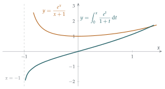

STEP III 2016，第 3 題
繼續之前，請先閱讀題目（原題為英文）。題目載於 STEP Support Programme 的題目資料庫： step.maths.org/questions/16-s3-q3
引子
求導（differentiation）是機械式的工作：有一套法則可循，任何由常見部件砌成的函數，只要套用這些法則就能求導。積分（integration）卻不然。每個學生都遇過各種技巧都攻不破的積分，並懷疑是否只是自己不夠聰明。有時答案是：誰也不夠聰明，因為根本沒有公式。
本題就在一個特殊情況下證明這樣的事。積分 \(\int \frac{e^x}{x+1}\,\mathrm{d}x\) 作為面積當然存在，但它不能寫成（有理函數）\(\times\, e^x\) 的形式，而這正是用分部積分法（integration by parts）時預期會得到的形式。證明某件事不可能做到，而不是把某樣東西找出來，是另一種數學，也極具數學的特色。
動筆之前
若 \(\int \mathrm{f}(x)e^x\,\mathrm{d}x = \frac{\mathrm{P}}{\mathrm{Q}}e^x + C\)，\(\mathrm{P}\) 和 \(\mathrm{Q}\) 必須滿足甚麼方程？（對右邊求導。）
求導得 \(\dfrac{\mathrm{d}}{\mathrm{d}x}\left(\dfrac{\mathrm{P}}{\mathrm{Q}}e^x\right) = \dfrac{\mathrm{P}'\mathrm{Q} - \mathrm{P}\mathrm{Q}' + \mathrm{P}\mathrm{Q}}{\mathrm{Q}^2}\,e^x\)，而這必須等於 \(\mathrm{f}(x)e^x\)。所以整道題目其實圍繞着以下的多項式恆等式（polynomial identity）： \[\mathrm{P}'\mathrm{Q} - \mathrm{P}\mathrm{Q}' + \mathrm{P}\mathrm{Q} = \mathrm{f}\,\mathrm{Q}^2.\] 關於積分的問題，就此變成關於多項式的問題：它們的因式和次數。
逐步解題
階段 1 因式 \(x + 1\)
取 \(\mathrm{f}(x) = \dfrac{x^3 - 2}{(x+1)^2}\)，把恆等式兩邊同乘 \((x+1)^2\)： \[(x+1)^2\bigl(\mathrm{P}'\mathrm{Q} - \mathrm{P}\mathrm{Q}' + \mathrm{P}\mathrm{Q}\bigr) = (x^3 - 2)\,\mathrm{Q}^2. \tag{$\dagger$}\]
在 \((\dagger)\) 中代入 \(x = -1\)。必然會出現甚麼情況？
當 \(x = -1\) 時，左邊等於 \(0\)，右邊則是 \((-1 - 2)\,\mathrm{Q}(-1)^2 = -3\,\mathrm{Q}(-1)^2\)。所以 \(\mathrm{Q}(-1) = 0\)，而根據因式定理（factor theorem），\(x + 1\) 是 \(\mathrm{Q}\) 的因式。■
階段 2 次數
設 \(\mathrm{P}\) 的次數（degree）為 \(p\)，\(\mathrm{Q}\) 的次數為 \(q\)。
在 \(\mathrm{P}'\mathrm{Q} - \mathrm{P}\mathrm{Q}' + \mathrm{P}\mathrm{Q}\) 中，哪一項的次數最高？它會被其餘各項抵消嗎？
\(\mathrm{P}\mathrm{Q}\) 的次數是 \(p + q\)，而 \(\mathrm{P}'\mathrm{Q}\) 和 \(\mathrm{P}\mathrm{Q}'\) 的次數最多是 \(p + q - 1\)。所以 \((\dagger)\) 左邊的次數恰好是 \(2 + p + q\)，右邊的次數是 \(3 + 2q\)。令兩者相等，得 \(p = q + 1\)。■
階段 3 求 \(\mathrm{P}\)
取 \(\mathrm{Q} = x + 1\)，則 \(\mathrm{Q}' = 1\)，而 \(\mathrm{P}\) 的次數為 \(2\)。把 \((\dagger)\) 除以 \((x + 1)^2\)： \[\mathrm{P}'(x + 1) - \mathrm{P} + \mathrm{P}(x + 1) = x^3 - 2, \qquad\text{即}\qquad (x + 1)\mathrm{P}' + x\mathrm{P} = x^3 - 2.\] 試設 \(\mathrm{P} = \alpha x^2 + \beta x + \gamma\)。左邊是 \[(x + 1)(2\alpha x + \beta) + \alpha x^3 + \beta x^2 + \gamma x = \alpha x^3 + (2\alpha + \beta)x^2 + (2\alpha + \beta + \gamma)x + \beta.\] 與 \(x^3 - 2\) 比較係數：\(\alpha = 1\)；\(2\alpha + \beta = 0\)，故 \(\beta = -2\)；於是 \(\gamma = 0\)；常數項 \(\beta = -2\) 亦吻合。所以 \[\mathrm{P}(x) = x^2 - 2x, \qquad \int \frac{x^3 - 2}{(x+1)^2}\,e^x\,\mathrm{d}x = \frac{x^2 - 2x}{x + 1}\,e^x + C. \qed\] （有興趣的話可以求導驗算，這是練習商法則（quotient rule）的好題目。）
階段 4 一件不可能的事
現在假設 \(\int \frac{e^x}{x+1}\,\mathrm{d}x = \frac{\mathrm{P}}{\mathrm{Q}}e^x + C\)，其中 \(\mathrm{P}\) 和 \(\mathrm{Q}\) 沒有公因式（common factor）。恆等式變成 \[(x + 1)\bigl(\mathrm{P}'\mathrm{Q} - \mathrm{P}\mathrm{Q}' + \mathrm{P}\mathrm{Q}\bigr) = \mathrm{Q}^2.\] 一如第 1 階段，代入 \(x = -1\) 可知 \(\mathrm{Q}(-1) = 0\)。寫成 \(\mathrm{Q} = (x+1)^k\mathrm{R}\)，其中 \(k \geq 1\) 且 \(\mathrm{R}(-1) \neq 0\)（即盡量抽出 \(x + 1\) 這個因式）。
代入 \(\mathrm{Q} = (x+1)^k\mathrm{R}\)，盡量約去 \((x + 1)\) 的因式，然後代入 \(x = -1\)。你能得知 \(\mathrm{P}(-1)\) 的甚麼性質？
這時 \(\mathrm{Q}' = k(x+1)^{k-1}\mathrm{R} + (x+1)^k\mathrm{R}'\)，而 \[\mathrm{P}'\mathrm{Q} - \mathrm{P}\mathrm{Q}' + \mathrm{P}\mathrm{Q} = (x+1)^{k-1}\Bigl[(x+1)\bigl(\mathrm{P}'\mathrm{R} - \mathrm{P}\mathrm{R}' + \mathrm{P}\mathrm{R}\bigr) - k\mathrm{P}\mathrm{R}\Bigr].\] 所以恆等式變成 \((x+1)^k\bigl[(x+1)(\mathrm{P}'\mathrm{R} - \mathrm{P}\mathrm{R}' + \mathrm{P}\mathrm{R}) - k\mathrm{P}\mathrm{R}\bigr] = (x+1)^{2k}\mathrm{R}^2\)。除以 \((x+1)^k\)： \[(x+1)\bigl(\mathrm{P}'\mathrm{R} - \mathrm{P}\mathrm{R}' + \mathrm{P}\mathrm{R}\bigr) - k\mathrm{P}\mathrm{R} = (x+1)^k\mathrm{R}^2.\] 當 \(x = -1\) 時，由於 \(k \geq 1\)，上式給出 \(-k\,\mathrm{P}(-1)\mathrm{R}(-1) = 0\)。因為 \(k \neq 0\) 且 \(\mathrm{R}(-1) \neq 0\)，必有 \(\mathrm{P}(-1) = 0\)。但這樣 \(x + 1\) 就同時整除 \(\mathrm{P}\) 和 \(\mathrm{Q}\)，與兩者沒有公因式的假設矛盾。所以這樣的 \(\mathrm{P}\) 和 \(\mathrm{Q}\) 並不存在。■
回顧
轉化為代數。「這個積分能否寫成這種形式？」變成了「這個多項式恆等式有沒有解？」
在特殊點取值。代入 \(x = -1\) 就得到關於因式的資訊，前後共用了三次。
利用最簡分數的反證法（proof by contradiction）。正如 第 1.3 節 中處理 \(\sqrt2\) 的做法，先假設分數已約至最簡，再找出一個公因式，便得到矛盾。
背後的數學
第 (ii) 部分背後有一幅簡單的圖像。被積函數（integrand）\(\frac{e^x}{x+1}\) 在 \(x = -1\) 處有一個單極點（simple pole）：在該點附近，它的表現像 \(\frac{e^{-1}}{x+1}\)。對 \(\frac{1}{x+1}\) 積分得 \(\ln|x+1|\)，所以原函數（antiderivative）在 \(-1\) 附近的表現應該像 \(e^{-1}\ln|x+1|\)，以對數的速度趨向 \(-\infty\)（圖 4.6.1）。但有理函數乘以 \(e^x\) 只能以冪 \((x+1)^{-k}\) 的方式趨向無窮，其導數因而有一個階數為 \(k + 1 \geq 2\) 的極點，絕不會是單極點。有理函數無法產生對數式的表現；第 4 階段的代數運算，正是這個觀察的嚴格版本。相反，在第 (i) 部分，被積函數有一個二階極點，而這正是帶有單極點的函數求導後的模樣，所以答案才有可能是有理的。

劉維爾與 Risch 算法
在 1830 年代，劉維爾（Joseph Liouville）建立了一套理論，研究哪些積分可以用初等函數（elementary functions）表示（即由多項式、指數函數、對數函數、根式和三角函數經通常的運算構成的函數）。他的其中一個結果指出：若 \(\mathrm{f}\) 和 \(\mathrm{g}\) 是有理函數而 \(\mathrm{g}\) 不是常數，則 \(\int \mathrm{f}(x)e^{\mathrm{g}(x)}\,\mathrm{d}x\) 只有在等於 \(\mathrm{R}(x)e^{\mathrm{g}(x)}\)（另加一個常數）時才是初等的，其中 \(\mathrm{R}\) 是某個有理函數。（對 \(\mathrm{g}\) 的條件不可或缺：當 \(\mathrm{g} = 0\) 而 \(\mathrm{f}(x) = \frac1x\) 時，積分是 \(\ln|x|\)，它是初等函數，卻不是有理函數。）所以本題排除了有理形式，其實就證明了 \(\int \frac{e^x}{x+1}\,\mathrm{d}x\) 根本不是初等函數。同一定理的其他版本可證明 \(\int e^{-x^2}\,\mathrm{d}x\) 和 \(\int \frac{\sin x}{x}\,\mathrm{d}x\) 都不是初等的。1969 年，Robert Risch 把劉維爾的想法發展成一套算法（algorithm），可就一大類函數判定初等積分是否存在，並在存在時把它求出來。電腦代數系統（computer algebra system）內部所用的，就是這套算法的不同版本。
特殊函數
當一個積分沒有初等形式時，數學家會給它起個名字，把它當作新的函數來研究，正如我們在 第 3.9 節 中處理朗伯 W 函數（Lambert W function）那樣。這裏的積分本質上就是指數積分（exponential integral）\(\mathrm{Ei}(x)\)，它出現於熱傳導問題，也出現於對數積分（logarithmic integral）\(\mathrm{li}(x) = \mathrm{Ei}(\ln x)\) 之中，後者是不超過 \(x\) 的質數（prime）個數的最佳簡單近似（第 1.2 節）。當 \(x < 0\) 時，它是 \(\int_{-\infty}^x \frac{e^t}{t}\,\mathrm{d}t\)。當 \(x > 0\) 時，這個積分會穿過 \(t = 0\) 處的無窮尖峯，所以 \(\mathrm{Ei}(x)\) 的定義是先挖去尖峯周圍的一個小區間 \((-\varepsilon, \varepsilon)\)，再令 \(\varepsilon \to 0\)：這就是柯西主值（Cauchy principal value）。
思維技巧
要證明某件事做不到，先假設它做得到，把這個假設轉化為精確的代數式，然後推出矛盾。
困難在於轉化：要為「做得到」的意思找出一個精確的陳述。在這裏，它的意思是「存在沒有公因式的多項式 \(\mathrm{P}\)、\(\mathrm{Q}\) 滿足這個恆等式」。數學中許多最深刻的結果，都是這類不可能性證明。
延伸練習
兩個可行的例子。證明 \(\displaystyle\int \frac{x e^x}{(x+1)^2}\,\mathrm{d}x = \frac{e^x}{x+1} + C\) 及 \(\displaystyle\int \frac{(x^2 + 1)e^x}{(x+1)^2}\,\mathrm{d}x = \frac{x - 1}{x + 1}\,e^x + C\)。
高斯函數。證明不存在多項式 \(\mathrm{P}\) 使得 \(\displaystyle\int e^{-x^2}\,\mathrm{d}x = \mathrm{P}(x)e^{-x^2} + C\)。（提示：求導後比較次數。）
另一個極點。仿照第 (ii) 部分的論證，證明 \(\displaystyle\int \frac{e^x}{x}\,\mathrm{d}x\) 不能寫成 \(\frac{\mathrm{P}(x)}{\mathrm{Q}(x)}e^x + C\) 的形式。
何時可行？假設 \(\mathrm{f}\) 是多項式，且對某個多項式 \(\mathrm{P}\) 有 \(\displaystyle\int \frac{\mathrm{f}(x)}{(x+1)^2}\,e^x\,\mathrm{d}x = \frac{\mathrm{P}(x)}{x+1}\,e^x + C\)。證明 \((x+1)\mathrm{P}' + x\mathrm{P} = \mathrm{f}\)，並透過計算此式及其導數在 \(x = -1\) 的值，證明 \(\mathrm{f}(-1) + \mathrm{f}'(-1) = 0\)。驗證這個條件對 \(\mathrm{f}(x) = x^3 - 2\) 以及練習 1 的例子都成立。 較難 你能證明這個條件也是充分的嗎？
延伸閱讀
Brian Conrad, “Impossibility theorems for elementary integration”（初等積分的不可能性定理）。可免費取得的講義，配合例子講解劉維爾定理。
Elena Anne Marchisotto & Gholam-Ali Zakeri, “An invitation to integration in finite terms”（有限形式積分導引），The College Mathematics Journal 25 (1994)。劉維爾理論的淺白入門。
Manuel Bronstein, Symbolic Integration I（Springer）。講述電腦代數系統實際上如何求積分。程度較深。